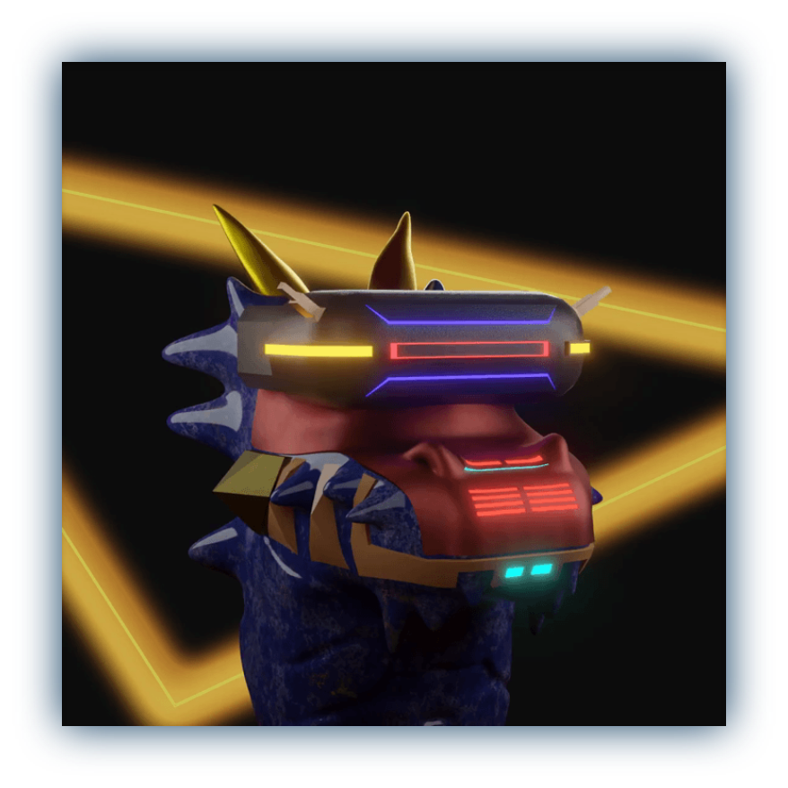

What is the supply?
888
What is the price?
0.88 SOL
When is the mint date?
TBA
Where can i mint a Draygons?
TBA
Why WL-only?
We don't like mint bots so bots don’t have a chance. It would be a more valuable collectible without flipper and bots.
I have been trading NFT for a very long time. I was an advertising student at university. I also streamed on Twitch for a very long time. I became a Twitch partnership and quit broadcasting. I worked as a Freelancer for about 5 years. In this process, I worked as a Freelancer for a few NFT projects.
I am not only the founder also the developer of the Draygon project. I provided services such as NFT mint, token creation and token market, daily airdrop services. Now I am working on staking. My 2 friends work with me for Draygons.
Draygons is a DAO project. Building a functional and profitable DAO is invaluable to us. Those included in the roadmap are prepared to create a passive income model and DAO. After creating the DAO we have some ideas. But we want to make these decisions with the DAO. These ideas are stake(earn NFT/Currency), GEN2 for holders and trader plugins(Analyze, Snipe etc.). We want to go to the moon and discuss these ideas with the DAO.
What is the Draygon Investment Co Buyback/Floor challenge?
All Draygon Investment Co NFTs listed at 0.75 SOL and below in the secondary market will be automatically purchased using Solana Big Brother or SolSniperNFT. They will remain dead in the wallet shared on the dead draygons channel.
What is our purpose of the challenge?
We want to create a valuable collection. Draygon is a project created to monetize DAO members. We want to start with our collection. NFTs reclaimed by the Challenge will reduce the total supply, and paperhands will quickly leave us. In this way, by decreasing the supply, we will become a more valuable collection and we will be together with the diamond hands. Draygons must go to the moon!
What is our purpose of the challenge
We will start investing to increase the amount of SOL in DAO wallet, we will make purchases from projects decided with the DAO. The amount of SOL in the wallet belongs to the DAO and the DAO will manage it.
- We will work with devs to create tools that facilitate investment, such as Floor Price Alert, Whales Alert, Floor Analyze.
- We will grow the DAO wallet with the community we will establish a partnership with. Deal proceeds, NFT gifts and additional income will be transferred to the DAO wallet.
- We will join to metaverses such as Sandbox, Portals that DAO chose.
How will DAO members earn?
Project:
DAO members will be able to make more profitable trade personally with the channels and tools we have created.
Passive:
When the initial amount of the investment is x2, half will be distributed equally to the holders.
NFT, currency and other rewards from projects partnering with DA